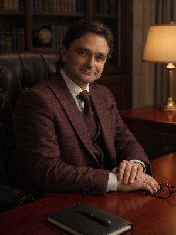

Что такое мошенничество?
Мошенничество - это хищение чужого имущества или приобретение права на чужое имущество путем обмана или злоупотребления доверием.
Существует большое количество преступлений против собственности совершаемых в форме обмана. В настоящее время наиболее часто встречающиеся способы это фальсификация и предъявление документов для получения чужого имущества, каких-либо прав или льгот; совершение действий в результате которых лицо приобретает право на чужое имущество.
Выгоду или право на чужое имущество лицо может получить так же в результате злоупотребления доверием. Когда одно лицо водится в заблуждение другим лицом, злоупотребляя его доверием, получает его имущество.
Преступления против собственности и борьба с ними превратились в одну из самых актуальных проблем правоохранительных органов современности.
Мошенничество по ст. 159 ч.4, ч.5
Более популярной квалификацией преступлений по мошенничеству являются части 4 и 5 ст. 159 УК РФ.
Характерными чертами данных квалификаций является: совершение преступления организованной группой, либо в особо крупном размере или повлекшее лишение права гражданина на жилое помещение (ч.4) и сопряженное с преднамеренным неисполнением договорных обязательств в сфере предпринимательской деятельности (ч.5).
Такие виды мошенничеств совершаются часто с государственным или муниципальным имуществом, в сфере предпринимательской деятельности в рамках хозяйственной деятельности юридических лиц. Расследование таких уголовных дел ведется следственными органами Следственного Комитета РФ (СК РФ).
Значительный ущерб - не менее десяти тысяч рублей.
Крупный размер - свыше двухсот пятьдесяти тысяч рублей.
Особо крупный размер - свыше одного миллиона рублей.
Мошенничество может совершаться в следующих сферах:
-
Мошенничество при получении денежных выплат.
-
Мошенничество с использованием электронных средств платежа.
-
Мошенничество в сфере страхования.
-
Мошенничество в интернете, соцсетях.
Наказание за мошенничество
Наказание за совершение мошенничества следует достаточно суровое, в большинство случаев, связанное с реальным лишением свободы сроком до 10 лет и штрафом до 1 миллиона рублей. В зависимости от тяжести, степени вины и размера ущерба, наказание назначается судом исходя из принципов справедливости и соразмерности. Не стоит экономить на свободе ради качественной защиты.
Помощь адвокатов по 159 УК - опытные профессионалы своего дела.
Адвокаты по 159 УК коллегии адвокатов г. Москвы "Шериев и партнеры" оказывают высококвалифицированные услуги в области защиты прав по уголовным делам данной категории.
Адвокаты по 159 УК являются квалифицированными специалистами именно по делам о мошенничестве, поскольку имеют многолетний опыт работы по указанным уголовным делам и богатую судебную практику. Опыт общения со следственными органами, в том числе с СК РФ, делает наших адвокатов по 159 УК РФ специалистами именно в этой области, так как они часто сталкиваются с различными квалификациями мошенничества и знают как построить защиту по тому или иному уголовному делу.
Адвокаты по делам о мошенничестве КА «Шериев и партнеры» осуществляют защиту по уголовным делам по ч.4 ст. 159 УК РФ, расследуемым следственными органами Следственного Комитета РФ. Многие из уголовных дел по ст. 159 УК совершаются в сфере хозяйственной деятельности юридических лиц, поэтому имеются особенность в их расследовании, что требует особой тактики и опыта в защите.
Имея положительный и обширный практический опыт в защите по уголовным делам по 159 УК, адвокаты смогут защитить Ваши интересы по уголовным делам.
Адвокаты по мошенничеству
8 (925) 502-40-09
Заявка на WhatsApp
Адвокат по 159 УК необходим на следующих этапах :
-
При доследственной проверке материалов
-
На предварительном следствии
-
При обжаловании постановлений органов следствия
-
При обжаловании незаконных действий и решений следователя
-
В судебных инстанциях по уголовному делу
-
При обжалование приговора в апелляционном и кассационном порядке
-
Для защиты интересов потерпевшего на предварительном следствии и в суде
-
Для освобождения осужденного по УДО
-
Для участия в проводимых правоохранительными органами оперативных или следственных действий
Какие действия предпринимает адвокат по мошенничеству?
-
Вступает в дело и изучает все доступные материалы уг. дела;
-
Формирует позицию защиты или алиби;
-
Посещает подозреваемого/обвиняемого по месту его нахождения;
-
Готовит и направляет следователю необходимые ходатайства по делу;
-
Принимает меры по сбору необходимых доказательств защиты;
-
Заявляет доказательства на стадии предварительного следствия;
-
Обжалует действия следователя в суд или прокуратуру;
-
Участвует при формировании квалификации содеянного;
-
При необходимости принимает меры для проведения бухгалтерской экспертизы;
-
По итогам следствия изучает все материалы уг. дела и анализирует их;
-
Оспаривает квалификацию в прокуратуру;
-
Ведет защиту обвиняемого в суде;
-
Обжалует судебный приговор в случае его необоснованности.
Гарантии качества работы наших адвокатов
-
Наши специалисты имеют опыт уголовной защиты свыше 15 лет.
-
Некоторые адвокаты Коллегии имеют навыки следственной работы.
-
Адвокаты Коллегии строят свою защиту по уголовным делам исключительно основываясь на добросовестности, честности и разумности при выполнении своих обязанностей.
-
Профессиональный подход к делу, подразумевает соблюдение приоритетного принципа – не навредить и максимально улучшить положение обвиняемого/подозреваемого по каждому уголовному делу.
-
Наши специалситы работают на всей территории Москвы, Московской области, а так же по всем регионам РФ. Для Вашего удобства предусмотрен выезд адвоката к месту Вашего нахождения.
Адвокаты по ч.4 ст.159 УК - опыт и практика

Шериев Ахмед Назирович
опыт 20 лет
Юрьев Михаил Владимирович
опыт 15 лет

Цыкал Дмитрий Юрьевич
Опыт 15 лет
Стоимость услуг адвокатов по мошенничеству - по ст.159, ч.4 ст.159 УК
Успешная практика адвокатов по ст. 159 УК.
Изменение меры пресечения на подписку о невыезде по ч.4 ст. 159 УК.
В результате защиты адвоката, подзащитному на стадии следствия дыла заменена мера пресечения на подписку о невыезде. Обвинялся подзащитный по ч.4 ст. 159 УК РФ.
Назначение мягкого наказания обвиняемому по мошенничеству ч. 4 ст. 159 УК.
Уголовное дело расследовалось СК РФ по г. Москве в течении 4-х лет, подзащитный обвинялся в хищении денежных средств в размере 320 мл.руб. К нему применялись различные меры принуждения от заключения под стражей до подписки о невыезде и заключении в медицинский стационар.
Результат по делу.
К моменту слушания уголовного дела обвиняемый был под подпиской, в результате судебного рассмотрения по дел был вынесен приговор о назначении обвиняемому 3,8 л. лишения свободы, ограничившись отбытым обвиняемым сроком. От дополнительных видов наказания в виде штрафа обвиняемый был освобожден. Гражданский иск оставлен без удовлетворения.
Прекращение уголовного дела по ч. 4 ст. 159 УК.
Уголовное дело было возбуждено по матералам проверки УФСБ. Обвинение лицу было предъявлено спустя 4 месяца расследования. В ходе следствия, неоднократно квалификация уточнялась.
Результат по делу.
Спустя 1 год следственных мероприятий, проведеных допросов, очных ставок и экспертиз, после неоднократных обжалований процессуальных решений органов следствия, следствие пришло к выводу об отсутствии состава преступления в действиях подзащитного. Уголовное дело было прекращено по реабилитирующим основаниям.